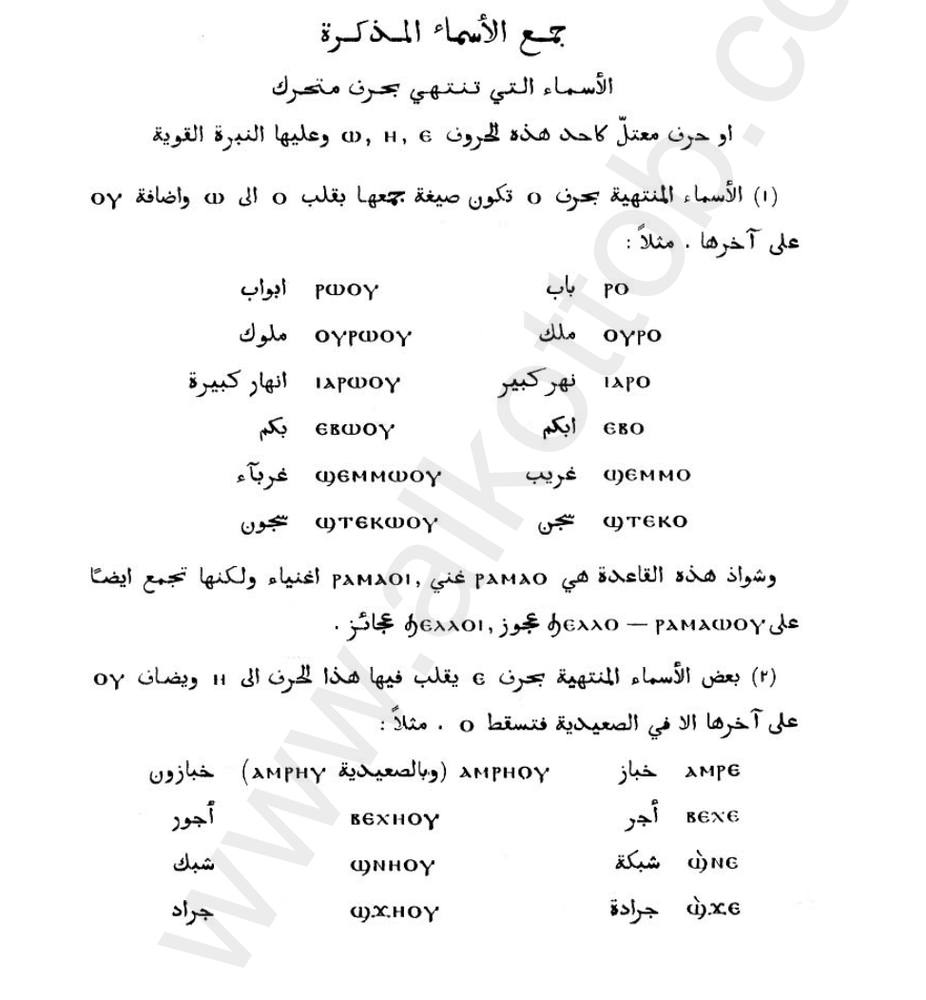
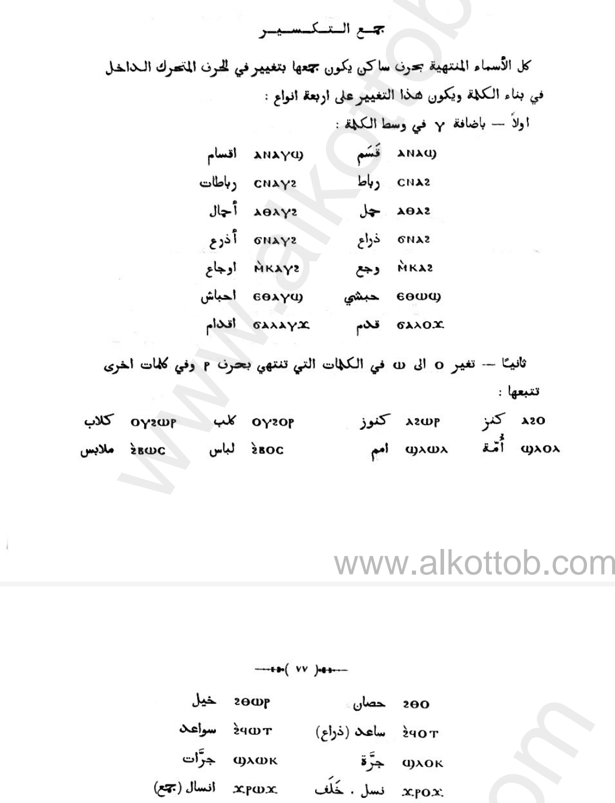
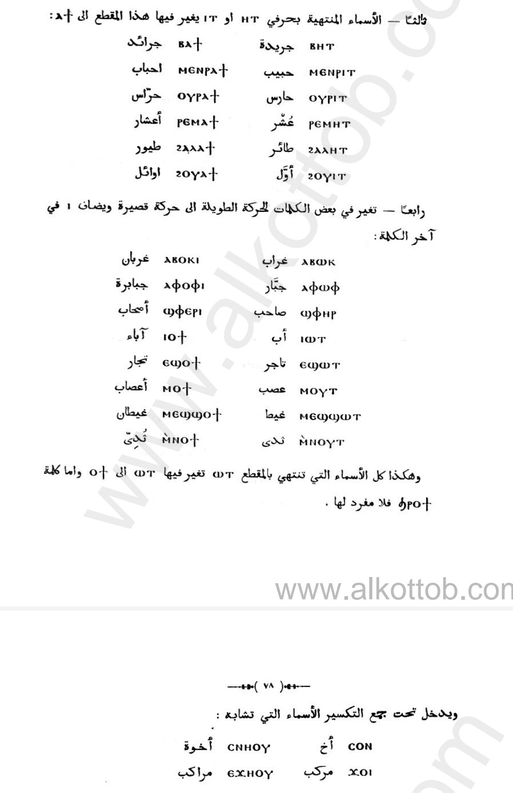
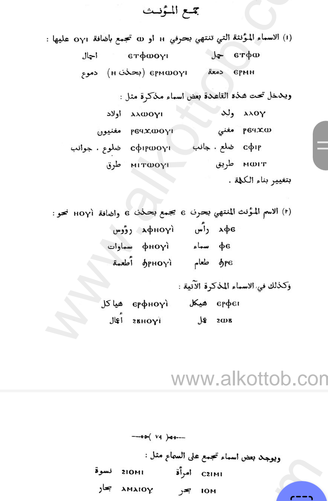

From قواعد اللغة المصرية القبطية. Transcription by Ahem Boi
In masculine nouns that end with ⲟ
Their plurals turn the ⲟ into an ⲱ and adds ⲟⲩ
| singular | plural |
|---|---|
| Ⲟⲩⲣⲟ | Ⲟⲩⲣⲱⲟⲩ |
| Ⲓⲁⲣⲟ | Ⲓⲁⲣⲱⲟⲩ |
Exceptions being ϧⲉⲗⲗⲟ and ⲣⲁⲙⲁⲟ, being ϧⲉⲗⲗⲟⲓ and ⲣⲁⲙⲁⲟⲓ But ⲣⲁⲙⲁⲱⲟⲩ also works
Likewise with nouns that end with ⲉ
You turn ⲉ into a ⲏ and add ⲟⲩ
| singular | plural |
|---|---|
| Ⲃⲉⲭⲉ | Ⲃⲉⲭⲏⲟⲩ |
| Ϣ̀ϫⲉ | Ϣ̀ϫⲏⲟⲩ |
Derived names that end with ⲉ like ⲥⲁⲃⲉ coming from ⲥⲃⲱ and ⲑⲉϣⲉ coming from ⲑⲱϣ get pluraled by adding a ⲩ in the ending
So it is:
| singular | plural |
|---|---|
| Ⲥⲁⲃⲉ | Ⲥⲁⲃⲉⲩ |
| Ϣⲁϥⲉ | Ϣⲁϥⲉⲩ |
| Ⲑⲉϣⲉ | Ⲑⲉϣⲉⲩ |
Irregular plural nouns that end with consonants get pluraled in 4 ways
| singular | plural |
|---|---|
| ⲥ̀ⲛⲁϩ | ⲥ̀ⲛⲁⲩϩ |
| ⲙ̀ⲕⲁϩ | ⲙ̀ⲕⲁⲩϩ |
| ϭⲁⲗⲟϫ | ϭⲁⲗⲁⲩϫ |
If the last consonant is ⲣ and the vowel that comes before it is ⲟ, it gets strengthened into a ⲱ, and this rule applies to some other nouns than I think had the ⲣ in older Egyptian but they fell:
| singular | plural |
|---|---|
| Ⲟⲩϩⲟⲣ | ⲟⲩϩⲱⲣ |
| Ϩ̀ⲑⲟ | Ϩ̀ⲑⲱⲣ |
Words ending in ⲏⲧ or ⲓⲧ get pluraled into ⲁϯ as their end
| singular | plural |
|---|---|
| Ⲃⲏⲧ | Ⲃⲁϯ |
| Ⲙⲉⲛⲣⲓⲧ | Ⲙⲉⲛⲣⲁϯ |
| Ϩⲁⲗⲏⲧ | Ϩⲁⲗⲁϯ |
Nouns with strong vowels aka ⲏ or ⲱ/ⲟⲩ get turned into weaker vowels ⲉ and ⲟ and get a ⲓ in their ends
| singular | plural |
|---|---|
| Ⲁⲫⲱⲫ | Ⲁⲫⲟⲫⲓ |
| Ⲁⲃⲱⲕ | Ⲁⲃⲟⲕⲓ |
| Ϣ̀ⲫⲏⲣ | Ϣ̀ⲫⲉⲣⲓ |
| Ⲓⲱⲧ | Ⲓⲟϯ |
The oddities that don’t follow any of the last ones being
| singular | plural |
|---|---|
| Ⲥⲟⲛ | Ⲥ̀ⲛⲏⲟⲩ |
| Ϫⲟⲓ | Ⲉ̀ϫⲏⲟⲩ |
Nouns that end with ⲱ or ⲏ get ⲟⲩⲓ added to them
| singular | plural |
|---|---|
| Ⲉⲧⲫⲱ | Ⲉⲧⲫⲱⲟⲩⲓ |
| Ⲉⲣⲙⲏ | Ⲉⲣⲙⲱⲟⲩⲓ (Here ⲏ was turned into ⲱ) |
And that applies to some masculine(able) nouns such as:
| singular | plural |
|---|---|
| Ⲁⲗⲟⲩ | Ⲁⲗⲱⲟⲩⲓ |
| Ⲣⲉϥϫⲱ | Ⲣⲉϥϫⲱⲟⲩⲓ |
| Ⲥⲫⲓⲣ | Ⲥⲫⲓⲣⲱⲟⲩⲓ |
But structure of the word changes
Feminine nouns that end with ⲉ turn the ⲉ into ⲏ and add ⲟⲩⲓ
| singular | plural |
|---|---|
| Ⲁⲫⲉ | Ⲁⲫⲏⲟⲩⲓ |
| Ⲫⲉ | Ⲫⲏⲟⲩⲓ |
| Ϧⲣⲉ | Ϧⲣⲏⲟⲩⲓ |
And this also applies to some masculines, by changing structure:
| singular | plural |
|---|---|
| Ϩⲱⲃ | Ϩⲃⲏⲟⲩⲓ |
| Ⲉⲣⲫⲉⲓ | Ⲉⲣⲫⲱⲟⲩⲓ |
And last ones being irregulars to all we just said
| singular | plural |
|---|---|
| Ⲥ̀ϩⲓⲙⲓ | Ϩⲓⲟⲙⲓ |
| Ⲓⲟⲙ | Ⲁⲙⲁⲓⲟⲩ |



